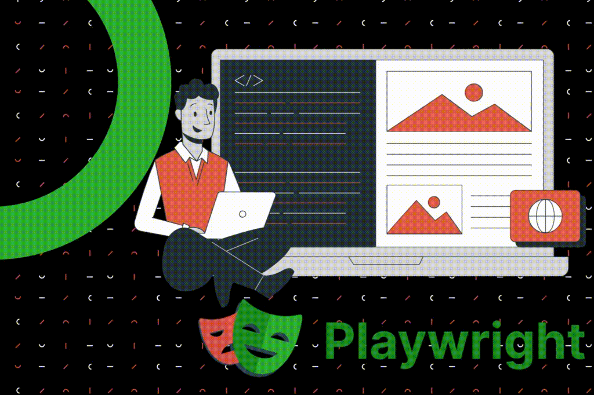

Api Testing | Automation | Booker
Este proyecto de automatización utiliza Java, Serenity BDD y Cucumber para realizar pruebas de regresión en una API REST.
Se implementa el patrón Screenplay para mejorar la legibilidad, mantenibilidad y reutilización del código.
Genera reportes detallados.
Ver más

Web Testing | Selenium | Automation |
Este proyecto utiliza Selenium, Cucumber y el patrón de diseño Screenplay para realizar pruebas automatizadas en aplicaciones web. Se utiliza Maven como gestor de dependencias
Ver más
Mobile Testing | Appium | Booking
Este proyecto de automatización se centra en la automatización de pruebas móviles utilizando Appium.
Ver más
Data Migration Testing | Great Expectations | Python
Este proyecto tiene como objetivo realizar el análisis y las pruebas de migración de datos utilizando la biblioteca Great Expectations en Python. Great Expectations es una herramienta de
código abierto que permite definir, documentar y validar expectativas sobre los datos de un proyecto..
Ver más
Api Testing | Postman | Booker
Automatización de pruebas en Postman con data drive, ambientes y ejecuciones con Newman. Permite validar escenarios diversos,
configurar entornos específicos y ejecutar pruebas de forma automatizada. Mejora la eficiencia y calidad en el proceso de pruebas de APIs.
Ver más

Web Testing | Playwright | Automation |
Automatización end-to-end con Playwright y TypeScript. Permite realizar pruebas exhaustivas de aplicaciones web,
simulando interacciones reales del usuario. Aprovecha las ventajas de Playwright para una ejecución rápida y confiable. Mejora la eficiencia en el desarrollo y garantiza la calidad del producto final.
.
Ver más

Mobile Testing|Api Testing | Appium | Serenity Rest
Este proyecto de automatización tiene como objetivo realizar pruebas automatizadas
en una aplicación móvil utilizando Appium.
Se utiliza el patrón de diseño Screenplay en conjunto con Serenity BDD, Selenium WebDriver y Cucumber para facilitar la escritura y ejecución de escenarios de pruebas.
Ver más

Performance Testing | jmeter
Pruebas de carga con JMeter. Realiza pruebas exhaustivas para evaluar el rendimiento y la capacidad de una aplicación bajo diferentes cargas de usuarios.
Identifica cuellos de botella, optimiza el rendimiento y asegura la escalabilidad del sistema.
Ver más
{kind=link}
{kind=link}
{kind=link}
{kind=link}
{kind=link}